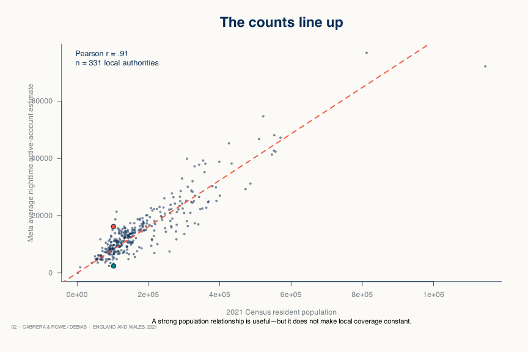
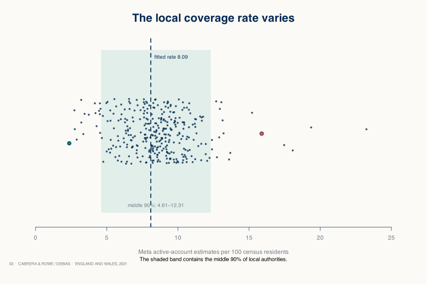
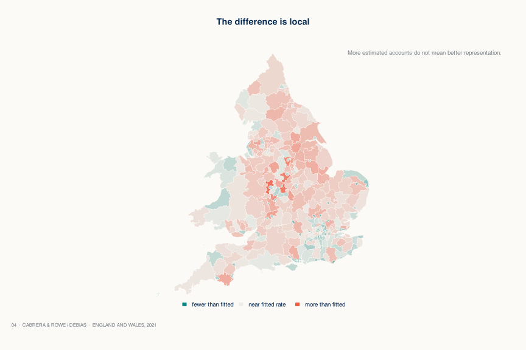
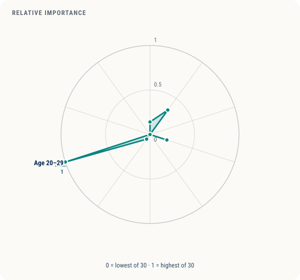
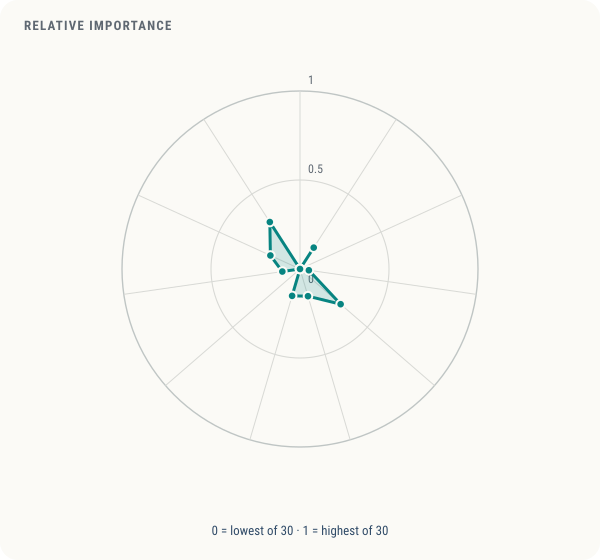
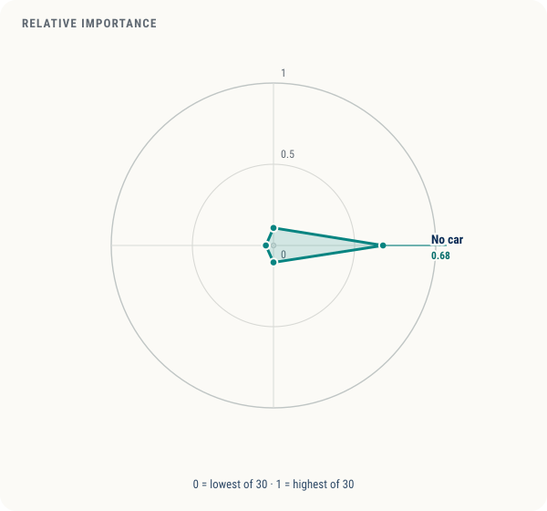
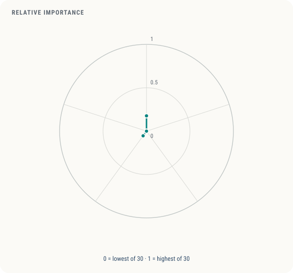
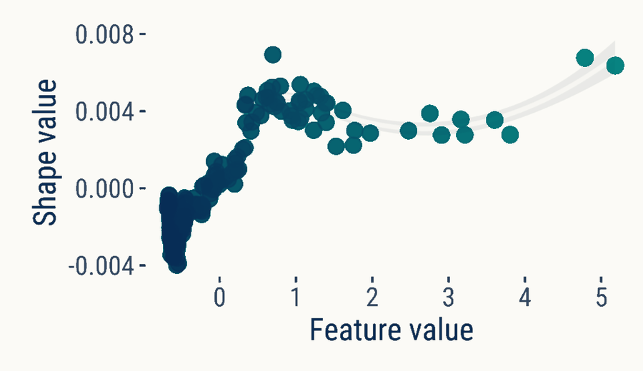
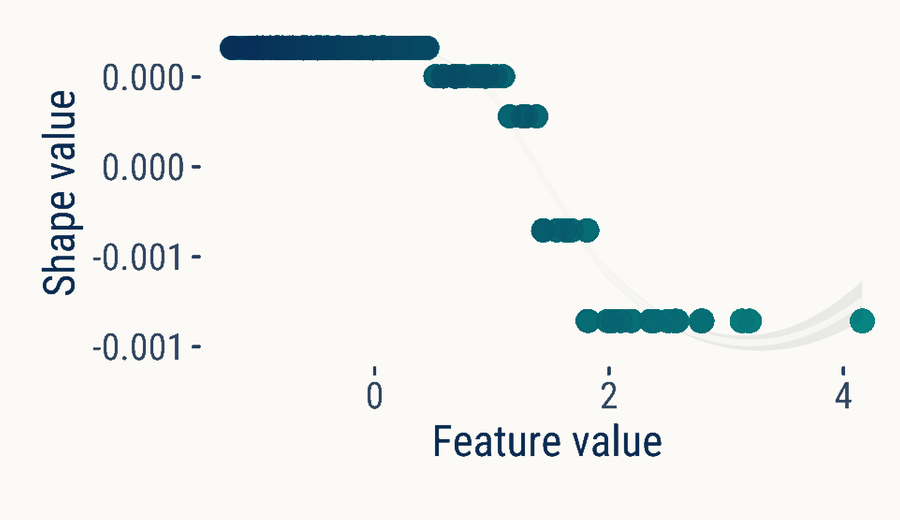
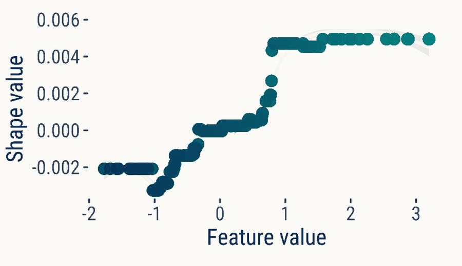

Watford
102,246 residents
Meta active-account estimate: 2,419
2.37 accounts per 100
DEBIAS data story · Published in Royal Society Open Science
1 / 8 · Pair
Read from the start ↑102,246 residents
Meta active-account estimate: 2,419
2.37 accounts per 100
different local
population coverage rates
102,001 residents
Meta active-account estimate: 16,204
15.89 accounts per 100
1 / 8 · Pair
Two places with similar underlying resident population can have very different levels of coverage in the digital data source. Then, the active-account population estimates will vary substantially. We observe this situation with the population coverage given by Meta data for some local authorities in the UK. For example, Watford and North East Derbyshire have around the same number of residents, but data coverage is 6.7 times larger for the latter.
2 / 8 · Counts
Across all 331 Local Authorities, census populations and Meta’s active-account population estimates have a Pearson correlation of r = .91. More populated places generally have more accounts. Yet, this high correlation is not necessarily a sign that the digital trace data is representative of the underlying population.
We find that local variation in population coverage rates can reveal information about what groups are under or overrepresented in the digital trace data source.

3 / 8 · Population coverage rates
Once we express Meta coverage as accounts per 100 census residents, local variation becomes clearer. Local population coverage rates vary widely around Meta’s fitted rate of 8.09 per 100 residents across the 331 Local Authorities.
The middle 90% of areas span 4.61 to 12.31 accounts per 100 residents, equivalent to a 2.7x range. Such local variation is widespread.

4 / 8 · Map
The map shows each area’s local population coverage rate relative to the fitted Meta rate. Blue means fewer estimated accounts per resident than fitted; red means more.
We find that local population coverage rates vary systematically with demographic, socioeconomic and other place-based characteristics. Analysing these relationships helps identify which groups may be under or overrepresented in the data.

Different data sources, different patterns
Getting population estimates from Meta data is one option, but other data sources can also be used. Before diving into which groups may be under or overrepresented in the data, we investigate four alternative data sources.
Each data source has its own fitted population coverage rate. We find that the same area can land on opposite sides of its source’s fitted population coverage rate. This suggests that different data sources may under or overrepresent different population groups.
Twitter/X uses inferred monthly home locations of active accounts and Meta uses active-account population estimates for March 2021. Multi-app1 uses inferred home locations of qualifying devices from the first week of April; Multi-app2 uses inferred home locations from preprocessed multi-application GPS data for November. The fitted index normalises scale; it does not make the sources equivalent.
5 / 8 · Sources
Sources intro ↑The pair changes position when the source changes. One times marks each source’s own fitted proportional rate.
5 / 8 · Sources
Focusing again on Watford and North East Derbyshire, we find that Watford is below Meta's fitted population coverage rate when using Meta as the data source, but above in the other three data sources. For North East Derbyshire, we find it is above for Meta and Multi-app2, but below for Twitter/X and Multi-app1.
The places have not changed. The source has.
| Source | Watford | North East Derbyshire |
|---|---|---|
| Twitter/X | 1.09× 9% above | 0.49× 51% below |
| Meta | 0.29× 71% below | 1.96× 96% above |
| Multi-app1 | 1.44× 44% above | 0.83× 17% below |
| Multi-app2 | 1.27× 27% above | 1.21× 21% above |
300 of 331 areas sit above their source-specific fitted population coverage rate in at least one data source and below in another. Watford and North East Derbyshire, highlighted in the visualisation, are not exception.
6 / 8 · Understand the influence of local characteristics
We find that population coverage rates vary systematically with local characteristics. By analysing this variation, we can identify which population groups may be under or overrepresented in the data. We do this analysis across all four data sources: Twitter/X, Meta, Multi-App1 and Multi-App2.
We use a machine-learning based model (XGBoost) to analyse which place-based characteristics are the most important factors leading to low population coverage bias in a given data source. These characteristics define the population groups that are likely to be underrepresented in that data source.
Selected source: Twitter/X
Choose a data source. In the radial plots below, we label the dominant place-based characteristics associated with low population coverage rates. For example, in Twitter/X data, the share of the population aged 20-29 and the share of households without a car are important predictors of low population coverage rates.
We find that the associations between local characteristics and population coverage rates can flatten, reverse direction or change shape across the observed range. This is why we use a flexible machine-learning model to identify the place-based characteristics linked to low population coverage rates.




1 of 4 · Demographic context
Swipe horizontally to see raw values and ranks.
| Context | Area characteristic | Raw mean absolute SHAP | Relative importance (0–1) | Source rank |
|---|---|---|---|---|
| Demographic | Population aged 0–9 | 0.00002691794021183855 | 0.140856123551 | 12 |
| Demographic | Population aged 10–19 | 0.0000649645600550803 | 0.339946371288 | 3 |
| Demographic | Population aged 60–69 | 0 | 0 | 20 |
| Demographic | Households with six or more people | 0.00003805668792388726 | 0.199142931961 | 6 |
| Demographic | Female population | 0 | 0 | 20 |
| Demographic | Population aged 30–39 | 0 | 0 | 20 |
| Demographic | Population aged 50–59 | 0.000012332312306408194 | 0.064532489939 | 17 |
| Demographic | Population aged 20–29 | 0.00019110237832216587 | 1 | 1 |
| Demographic | Population aged 40–49 | 0 | 0 | 20 |
| Demographic | Population aged 70 and over | 0 | 0 | 20 |
| Socioeconomic | Routine occupations | 0 | 0 | 20 |
| Socioeconomic | Population with Level 4 qualifications or above | 0.000027273989262934978 | 0.142719256047 | 11 |
| Socioeconomic | Population with no qualifications | 0 | 0 | 20 |
| Socioeconomic | Never worked and long-term unemployed | 0.000009591420828893087 | 0.050189960549 | 18 |
| Socioeconomic | Small employers and own-account workers | 0.00005770954486924102 | 0.301982347765 | 5 |
| Socioeconomic | Full-time students | 0.000030419167037705294 | 0.159177333662 | 9 |
| Socioeconomic | Lower supervisory and technical occupations | 0.00003005039306236026 | 0.157247614217 | 10 |
| Socioeconomic | Semi-routine occupations | 0 | 0 | 20 |
| Socioeconomic | Intermediate occupations | 0.000019170659907499414 | 0.100316176469 | 15 |
| Socioeconomic | Higher managerial, administrative and professional occupations | 0.000034953457907249684 | 0.18290435846 | 7 |
| Socioeconomic | Lower managerial, administrative and professional occupations | 0.000059920262322560554 | 0.313550583978 | 4 |
| Resource accessibility | Households without central heating | 0.000020664578218914 | 0.108133548103 | 13 |
| Resource accessibility | Households without a car or van | 0.00012899871064449975 | 0.675024098481 | 2 |
| Resource accessibility | Households owned | 0.000019936567481754933 | 0.104324015519 | 14 |
| Resource accessibility | Households not deprived in any dimension | 0.000008992498082396038 | 0.047055919248 | 19 |
| Mobility & geography | Population density | 0.00003367524472512583 | 0.176215728034 | 8 |
| Mobility & geography | Rural population | 0 | 0 | 20 |
| Mobility & geography | Population born outside the UK | 0 | 0 | 20 |
| Mobility & geography | Employed residents working mainly at or from home | 0.000012688271766345006 | 0.066395153623 | 16 |
| Mobility & geography | Population resident in the UK for less than two years | 0 | 0 | 20 |
The selected visualisations below show the actual shape of the relationship between some place-based characteristics and population coverage rates, for different data sources. While the radial plots above indicate which place-based characteristics are important predictors of low coverage rates, they do not tell us how these characteristics actually influence coverage. For example, from the radial plots we learn that the percentage of people aged 20-29 is an important predictor of low coverage rates in Twitter/X data. The central visualisation below shows how this relationship unfolds: as the percentage of people aged 20-29 increases, population coverage in Twitter/X data also tends to increase. Here, the y-axis represents the inverse of population coverage rates.
We find that the associations between local characteristics and population coverage rates can flatten, reverse direction or change shape across the observed range. This is why we use a flexible machine-learning model to identify the place-based characteristics linked to low population coverage rates.
MetaPopulation density

Twitter/XArea share aged 20–29

Multi-app1Area share with Level 4 qualifications

7 / 8 · Conclusions
Across four digital-trace data sources, we find substantial local differences in population coverage. These differences vary across places and data sources, and they are associated with demographic, socioeconomic and other local characteristics. This suggests that digital-trace data may be under or overrepresenting certain population groups. Therefore, their representativeness needs to be assessed explicitly before using it for population inference.
Assess before you infer.
Read the methods, limitations and wider findings8 / 8 · Learn more
Explore
See its observed Meta rate, its distance from the fitted benchmark and a precise interpretation note.
Find a local authorityAbout the research
Carmen Cabrera and Francisco Rowe of the University of Liverpool’s Geographic Data Science Lab compared four digital-trace datasets with the 2021 Census across 331 local authority areas in England and Wales. Their article published in Royal Society Open Science, Making hidden biases visible in population location data from mobile phones, examines how population coverage varies and which area-level characteristics are associated with that variation.
The analysis focuses on assessing area-level patterns while protecting the anonymity of individual users of digital technologies.
Read the methods, limitations and wider findingsStudy at a glance
Article attention
The Altmetric badge summarises online attention to the article, including mentions in news outlets, blogs and social media.
Read the published article